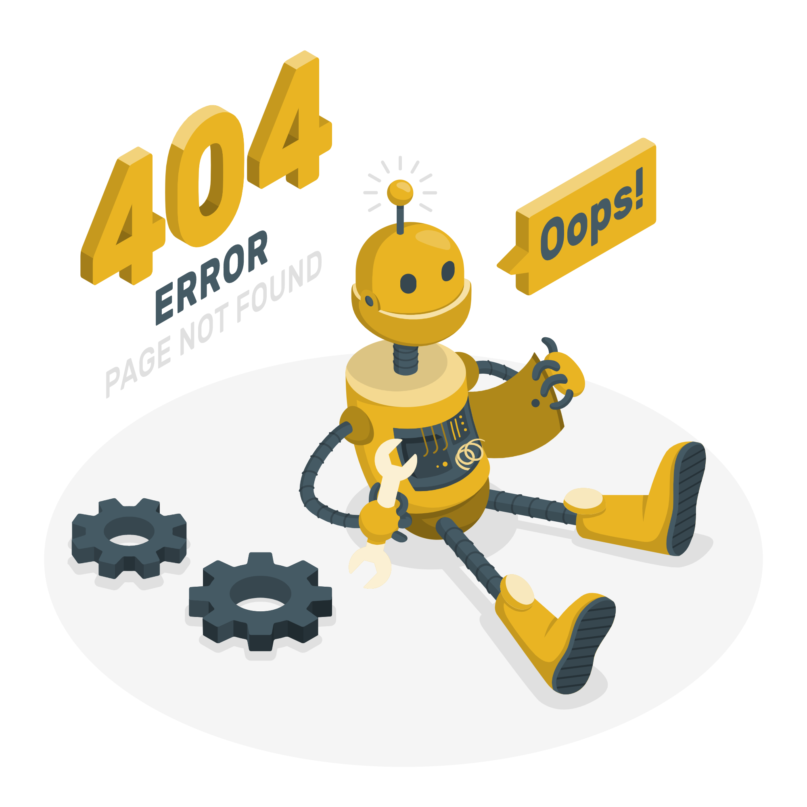

<div class="container">
    <div *ngIf="back" >
        <button mat-raised-button class="backBtn" (click)="goBack()" color="primary">
            Précedent 
            <span class="material-icons">
                keyboard_backspace
            </span>
        </button>
    </div>
    <div class="box" *ngIf="deleteElmnt"  @notFoundFade>
        
        <br><h2>Cette page n’est pas disponible</h2>
        <h4>Le lien peut être non valide ou la page a peut-être été supprimée. <br>Vérifiez si le lien que vous essayez d’ouvrir est correct.</h4> 
    </div>
</div>